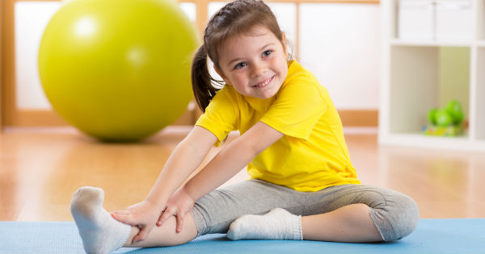
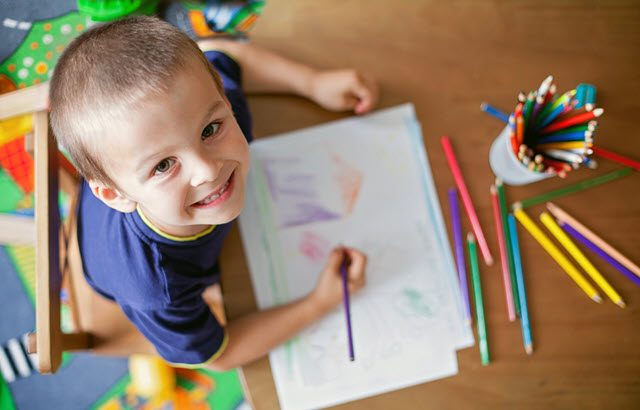
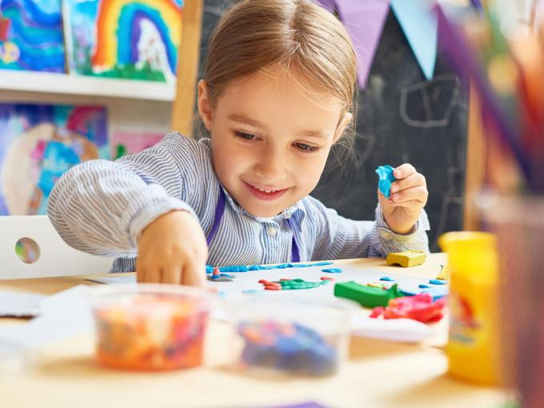
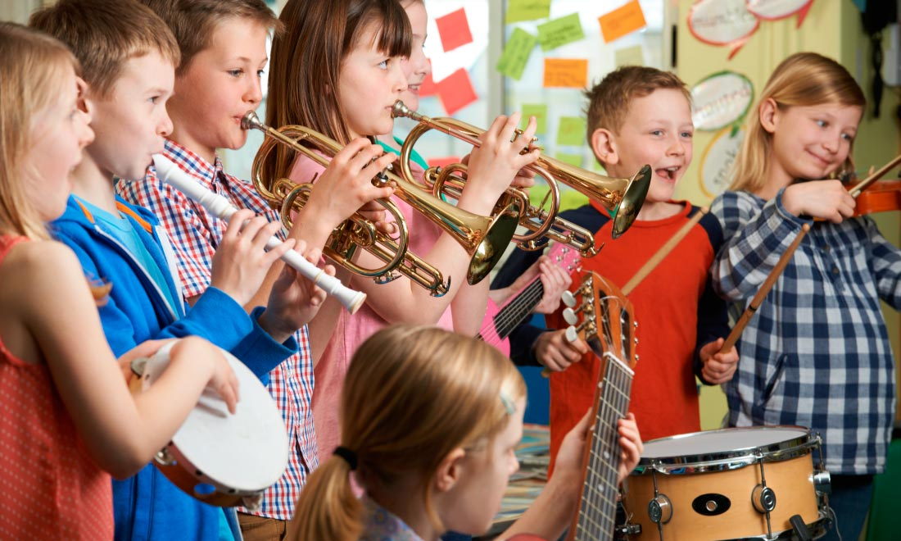
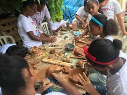

AJEDREZ
es un juego entre dos contrincantes, cada uno dispone de 16 piezas móviles que se colocan sobre un tablero dividido en 64 casillas . En su versión de competición, es considerado como un deporte, tiene claramente una dimensión social, educativa y terapéutica también.
FUTBOL
es un deporte de equipo jugado entre dos conjuntos de once jugadores cada uno y algunos árbitros que se ocupan de que las normas se cumplan correctamente. Es ampliamente considerado el deporte más popular del mundo, pues lo practican unas 270 millones de personas. También se le conoce como futbol asociación o fútbol asociación
EJERCICIO

Se llama ejercicio físico a cualquier actividad física que mejora y mantiene la aptitud física, la salud y el bienestar de la persona. Este tiene diversos beneficios como el fortalecimiento muscular, mejorar el sistema cardiovascular, desarrollar habilidades atléticas, deporte, pérdida de grasa o mantenimiento, bienestar emocional, entre otros.
DIBUJO

Dibujo significa tanto el arte que enseña a dibujar, como la delineación, figura o imagen ejecutada en oscuro y claro. Es una forma de expresión gráfica que plasma imágenes sobre un espacio plano, considerado parte de la pintura y una de las modalidades de las artes visuales. Se considera al dibujo como el lenguaje gráfico universal y ha sido utilizado por la humanidad para transmitir ideas, proyectos y, en un sentido más amplio, sus ideas, costumbres y cultura.
COCINA
La culinaria o arte culinario es una forma creativa de preparar los alimentos y depende mucho de la cultura, en términos de conocimientos respecto a los alimentos, su forma de prepararlos, así como de los rituales sociales establecidos alrededor de la comida. No hay que confundirlo con gastronomía, que englobaría a esta en un campo más general dedicado a todo lo relacionado con la alimentación.
MANUALIDADES

Las manualidades, en términos generales, son trabajos efectuados con las manos, con o sin ayuda de herramientas. Por extensión, el resultado de dicha labor también es conocido como manualidad.
Generalmente, se denomina así a algunas labores didácticas en las cuales se busca como objetivo un avance personal, desarrollo de la creatividad, y son una forma de esparcimiento. sujeto con el mundo real. La actividad es generadora del reflejo psíquico el cual,
MUSICA

según la definición tradicional del término, el arte de organizar sensible y lógicamente una combinación coherente de sonidos y silencios respetando los principios fundamentales de la melodía, la armonía y el ritmo, mediante la intervención de complejos procesos psico anímicos. El concepto de música ha ido evolucionando desde su origen en la Antigua Grecia, en que se reunía sin distinción a la poesía, la música y la danza como arte unitario.
REPOSTERIA
La repostería, confitería o pastelería es el arte de preparar o decorar pasteles u otros postres. El término repostería es el que se utiliza para denominar al tipo de gastronomía que se basa en la preparación, y decoración de platos dulces tales como tartas, pasteles, galletas, budines, etc. Hay una extensa variedad de recetas.
ARTESANIA

Artesanía se refiere al trabajo de un artesano o artesana (normalmente realizado de forma manual por una persona, sin el auxilio de maquinaria o automatizaciones), como al objeto o producto obtenido en el que cada pieza es distinta a las demás. La artesanía como actividad material se diferencia del trabajo en serie o industrial. Para que una artesanía sea tal debe ser trabajada a mano y cuanto menos proceso industrial tenga, más artesanal va a ser. La artesanía es un objeto totalmente cultural, ya que tiene la particularidad de variar dependiendo del contexto social, el paisaje, el clima, los recursos y la historia del lugar donde se realiza.
CURSOS MAS POPULARES
Solo los usuarios registrados podrán registrarse en los cursos en línea de la plataforma actívate
MUSICA
según la definición tradicional del término, el arte de organizar sensible y lógicamente una combinación coherente de sonidos y silencios respetando los principios fundamentales de la melodía, la armonía y el ritmo, mediante la intervención de complejos procesos psico anímicos. El concepto de música ha ido evolucionando desde su origen en la Antigua Grecia, en que se reunía sin distinción a la poesía, la música y la danza como arte unitario.
FUTBOL
es un deporte de equipo jugado entre dos conjuntos de once jugadores cada uno y algunos árbitros que se ocupan de que las normas se cumplan correctamente. Es ampliamente considerado el deporte más popular del mundo, pues lo practican unas 270 millones de personas. También se le conoce como futbol asociación o fútbol asociación
COCINA
La culinaria o arte culinario es una forma creativa de preparar los alimentos y depende mucho de la cultura, en términos de conocimientos respecto a los alimentos, su forma de prepararlos, así como de los rituales sociales establecidos alrededor de la comida. No hay que confundirlo con gastronomía, que englobaría a esta en un campo más general dedicado a todo lo relacionado con la alimentación.
MANUALIDADES
Las manualidades, en términos generales, son trabajos efectuados con las manos, con o sin ayuda de herramientas. Por extensión, el resultado de dicha labor también es conocido como manualidad.
Generalmente, se denomina así a algunas labores didácticas en las cuales se busca como objetivo un avance personal, desarrollo de la creatividad, y son una forma de esparcimiento. sujeto con el mundo real. La actividad es generadora del reflejo psíquico el cual,
Ofrecemos un amplio número de cursos educativos y actividades de desarrollo y formación para jóvenes y niños de distintas edades
Clases interactivas y divertidas, más de 80 actividades entre juegos, canciones e historias.
Este servicio no tiene costo y tiene como objetivo organizar grupos de aprendizaje, interacción, actividad y desarrollo para los niños en tiempos de cuarentena
Empieza un curso con 4 sencillos paso:
• Regístra una cuenta
• Inicia sesion
• Selecciona un curso de tu agrado
• Completa el formulario de registro